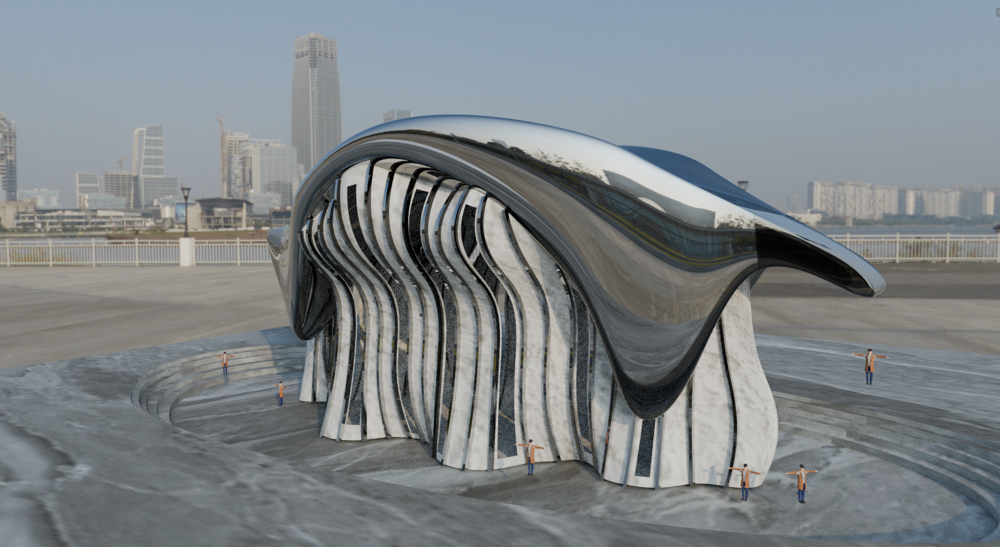

Continuum Gallery
An exhibition and arts space exploring organic geometry and continuous movement through a sculptural form inspired by Zaha Hadid’s fluid architectural language.

Explore the Model
Drag to rotate · Scroll to zoom
Loading 3D model…